当時としては画期的な製品でした
ＶＨＦ帯で、５Ｗと言うハイパワーをトランジスタの終段で実現・・・・何を言っても筐体のコンパクトさにあります
コスト面を含め、１Ｗ携帯型・・・オールトランジスタ方式のＲＦ出力の限界だった時代です
それ以上のハイパワー機は､終段は真空管で､送信時にはピーッというインバーター音がするもの、タクシー機の改造品も含め、それが当たり前の時代でした
真空管による５～１０Wのアンプとそれを駆動する電源、この容量を考えると当然筐体は大きくなります
車載に於いても､コントローラ(マイクとスピーカー）を運転席近くに配置し､本体（電源部を含む）はトランクの中に収納、というのがスタンダードなモービル局の姿でした
こちらでは、当時最新技術の結晶であったＦＤＦＭ-２Ｓ と、ＦＤＦＭ-５をご紹介します
いずれも１９６８年の製造ラベル、全く別に入手したものですが、偶然にも同じ５月製造となっていました |
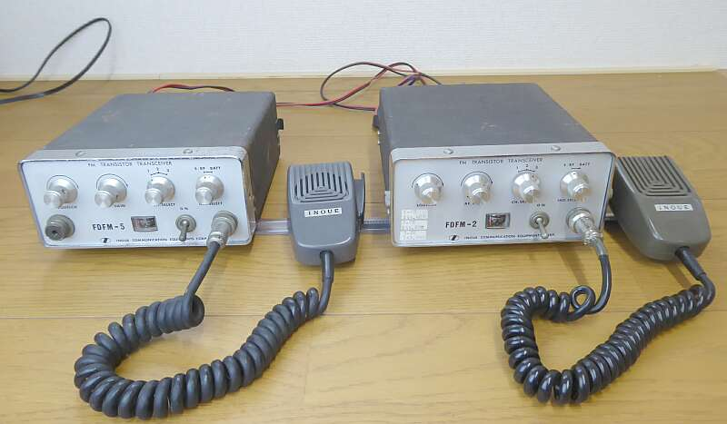 |
| ＦＤＦＭ-２Ｓ 144MHz帯 |
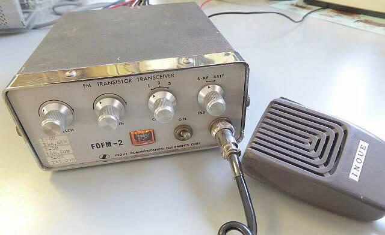
幅１６０ 高さ７０ 奥行き１８５ 単位はｍｍ 約１.５Ｋｇ
マイクロホンは、手持ちのＩＣ－７１に付属のものを拝借していますが､多分純正もこのもの！？ |
|
フロントパネルには、ＦＤＦＭ－２ とプリントされていますが、実際はＦＤＦＭ－２Ｓ ５Ｗ機です
背面に貼ってあるラベルには、ちゃんとＦＤＦＭ－２Ｓと表示されています
１Ｗモデルと共通パネルなのでしょう
社名の表記は、ＩＮＯＵＥ ＣＯＭＭＵＮＩＣＡＴＩＯＮ ＥＱＵＩＰＭＥＮＴＳ ＣＯＲＰ となっています |
|
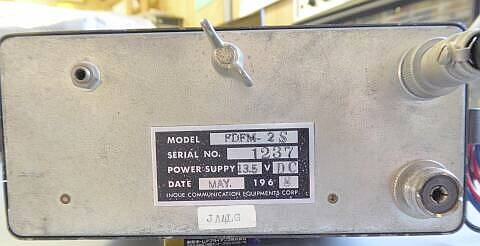 |
背面です
フロントパネルもそうですが、リアパネルもシンプルそのもの
電源・アンテナ・外部スピーカーの接続端子のみ
蝶ネジは､単なるアース端子、もしくは底面になにかジョイントする際の固定用です
１９６８年５月と記されたラベルが貼られています
発売開始は､その前年１９６７年１月のようです |
|
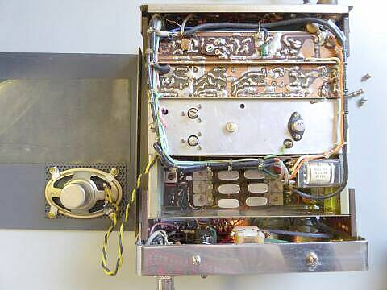 |
３ＣＨフル実装です
終段は、２ＣＳ７０２三菱の石ですね
これで５Ｗを出力します
多分ですが、１４４ＭＨｚ帯で１Ｗを超える出力をＴｒで実現した最初のモデルです
もしかしたら福山電機工業（ＦＤＫ 今のＡＬＩＮＣＯの元）に、なにかあったかも・・・記憶がありません
頭にあるイメージは､インバータ内蔵で終段は球なのですが・・・
その頃、車に乗れる年齢ではなかったもので！？ |
|
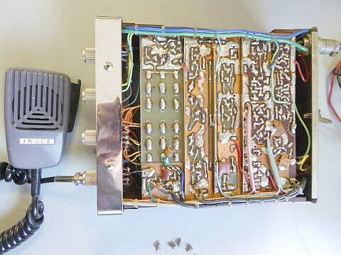 |
各ブロックごとにユニット化された構造です
ここまでの設計とは一味変わってきています
この構造は、その後ずっと引き継がれました
いわば、ＩＮＯＵＥ／ＩＣＯＭのお家芸かと・・・ |
| 20１8．03 Ｔｎｘ ＪＡ４ＢＺ |
ＦＤＦＭ-２Ｓ、入手時のままでいました（受信感度が今一歩でした）が、ＦＤＦＭ-５の修理？の便に、本機も本気で調整を行いました
最終的に、５KHｚデビエーション １μＶ入力で、S/N２６ｄｂ こちらは、当時としては高感度な部類かと思います
ＳＱのオープンには、－１０ｄｂ程度の信号強度が必要でした
送信は、入手当時からきっちり５Ｗが得られています |
|
| ＦＭ-２０ＢＭ |
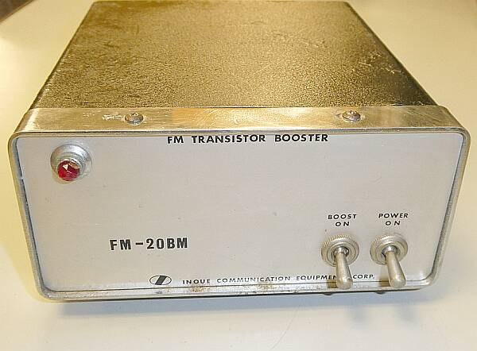 |
こちらは、ＦＤＦＭ-２ １Ｗ機を１０Ｗにパワーアップするブースターです（上記ＦＤＦＭ-２Ｓではミスマッチ！）
１９６９年当時としては、まだまだ珍しい（高価な）トランジスタ方式です
電源は、交直両用です |
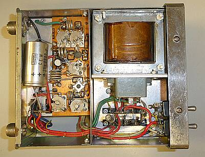 |
ご覧のように２ステージです
２ＳＣ１０１１ → ２ＳＣ７０３
ＡＣ電源も内蔵されています
ちゃんとした定電圧方式が採用されています
電源入力は、４Pコネクタを交直２本ずつ使用
差し替えて選ぶ方式です |
|
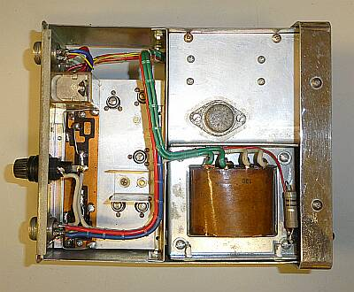 |
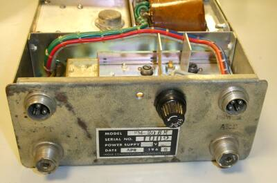
リアパネルです
ラベルには、APR １９６９ ＃１００２ と |
電源トランスの横に見えている大きめの抵抗器
なんとＰＬの電流調整用です
そのＰＬ Ｅ５/12V球・・・今では手に入らないかも、LED化で逃げるしかなさそうです |
左上３Pコネクタは、コントロール（スタンバイ）用
右上４Pコネクタは、電源用
ＤＣ／ＡＣいずれもここから給電します
ＲＦは、左Ｍ-Ｒが、トランシーバへ
右Ｍ-Ｒがアンテナ接続用です |
| 2022.03 追記 |
|
|
|
| ＦＤＦＭ-５ 50MHz帯 |
| 筐体サイズ、デザイン、あるいは基板構成など、ＦＤＦＭ-２Ｓと全く同じです |
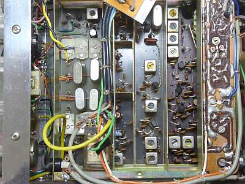 |
入手時点では、送受信とも全くＮＧ
受信は、ＩＦノイズこそ出ましたが、信号の受信は出来ません
全く受信できなかったのは、第一局発の発振コイルの離調、調整により受信はできるようになりましたが、感度については２０ｄｂ程度利得不足
ＲＦ－ＩＦすべて調整をしなおして正常レベルとなりました
クリスタルの見える左端の基板、上部が送信ＯＳＣ部 下部が受信ＯＳＣ部
その右が、受信のＲＦ－１ｓｔＭＩＸ基板 その右が２ｎｄＯＳＣと１ｓｔＩＦ基板、ここは最近の１０.７ＭＨｚではなく５.２５ＭＨｚで、ここから右側の４５５ＫＨｚの２ｎｄＩＦ・検波基板へ、選択度を稼ぐＩＦフィルタは、セラミックフィルタではなくＬＣによる集中ＩＦＴとなっています |
| 送信ユニットを取り外すことで受信ユニットの調整が可能に 構造などはＦＤＦＭ-２も全く同じ |
|
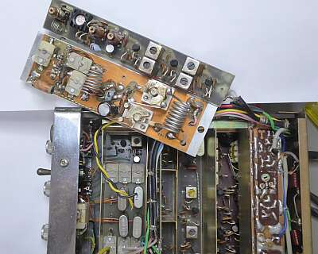
送信ユニット２枚を外しました、結構大変な作業です
ここまでしないと受信部の全体調整ができません
送信終段は、２ＳＣ１０６シングルです |
送信部は、逓倍－プリドライバ部と、ドライバ・終段部の基板２枚で構成されています
オシレータ部は、受信用オシレータと同じ１枚の基板です
オシレータ部がＶＸＯらしい改造がなされていましたが、全く送信（発振）しません
オリジナルの回路に戻しましたが、それでも発振しません
どう見ても発振コイルの同調Ｃの値が小さすぎますが、回路図がＦＤＦＭ-２と共通のためか、その値が記されていません
元ＩＣＯＭ 櫻井ＯＭの記事を参考にＣを変えたところ、同調コアを抜ききったところで無事発振してくれました
プリドライバ以降の調整が非常にシビア・・・なんとか安定に４Ｗ程度の出力が得られるようになりました（～４００ＭＨｚオシロが、とても役に立ちました）
|
| |
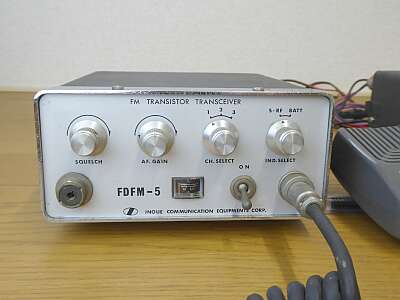 |
改めてフロントパネルです
ＦＤＦＭ-５には、フロントパネルにもM型接栓の用意があります
携帯運用を意識したのかな？
ケース後ろにパッチン錠を引っかけるような突起（爪）が出ています(ＴＯＰ写真参照）ので、もしかしたら本体後ろに延長して接続する電池ケースの存在があったのかもしれません（私は、目にしたことがありません）
１ＷのＦＤＦＭ-２にも、同様にフロントパネルにＭ型接栓があったようです
ＦＤＦＭ-２Ｓでは、爪だけが名残り・・・ |
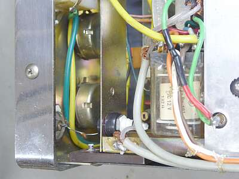 |
フロントパネル M型接栓裏です
バナナジャックが配してあります
M型接栓からバナナプラグにつなぐのでしょうか？
１.５Ｄ同軸ケーブルは、リアパネルのアンテナ接栓に接続されています
どちらか選んで使える？？？
入手時には、切り離されていましたが、メーカー出荷時、接続がされていたのかどうか？？です
一見接続されて見える小さなセラミックＣは、グランド側を結んでいるものです |
|
この時代の設計は、全体的にゲインに余裕がない印象があります…供給電圧が低いと顕著に影響が出ます
１３.５Ｖで使用することがスペックを満足させるために必要なようです（この時代の無線機は、いずれも基準動作電圧という表記があり、無視できません）
ここに気づくまで、１２Vで動作をさせていて、今少しゲイン不足とか、動作不安定さに悩まされました（丸半日棒に振ったかも！？）
１３.５Ｖの印加で、送信出力４Ｗ 定格５Ｗをやや下回りますが、ここはこれでＯＫとします
受信感度は、５KHｚデビエーション １μＶ入力で、S/N２６ｄｂ
ＳＱのオープンには、－１２～３ｄｂ程度の信号強度が必要でしたが、多分発売当時のスペックとニアリーイコールだと思います |